Decoding & Sampling Methods
Large Language Models : A Hands-on Approach
Recap: Decoder-only LLMs
- Tokenizer
- Transformer Decoder
- Self-attention
- Feedforward layers
- Layer normalization
- Residual connections
- Positional encoding
- Decoder only LLM
- Training Objective
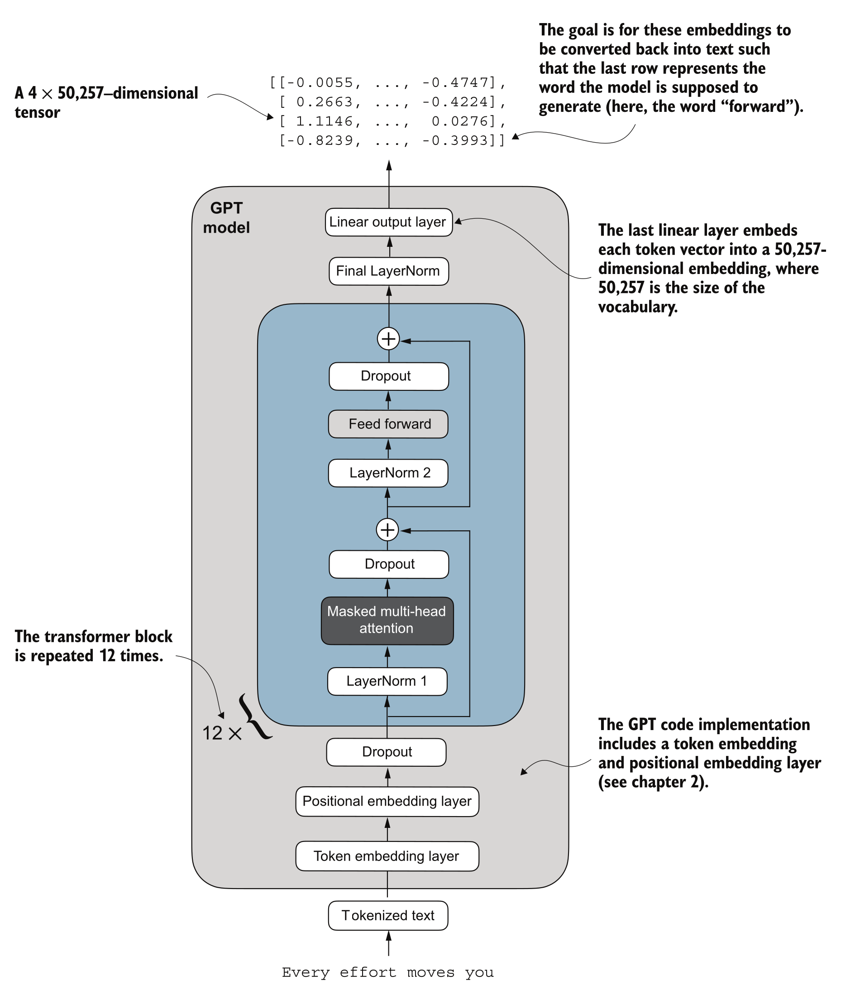
Source: Build a Large Language Model (From Scratch), Sebastian Raschka
Motivation
You’ve a trained model. How to get useful text out of it?
- Understand different decoding strategies for generating text
- Explore trade-offs between determinism, diversity, and computational efficiency
- Understand structured output generation
Auto Regressive Language Model
Predict next token given previous tokens, i.e., learn \(P(y_t \mid y_{<t}, x)\)
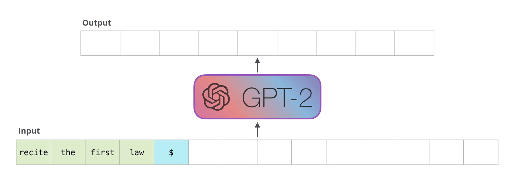
Source: Illustrated GPT-2
Auto Regressive Language Model
\[ P(y_1, y_2, \dots, y_T) = \prod_{t=1}^{T} P(y_t \mid y_{<t}) \]
The core objective : Predict the conditional probability distribution
\[ P(y_t \mid y_{<t}, \theta) \]
Where:
- \(y_t\): The token to be predicted at time step \(t\).
- \(y_{<t} = (y_1, \dots, y_{t-1})\): The sequence of preceding tokens (context).
- \(\theta\): The model parameters.
Example : P(“The cat sat”) = P(“The”) × P(“cat”|“The”) × P(“sat”|“The cat”)
Training vs. Inference
- Training : Learn to predict the next token given the previous tokens
- Inference : Use the trained model to generate text, given a prompt
Decoding
- \(P(y_t \mid y_{<t}, x)\) gives us a probability distribution over next-tokens
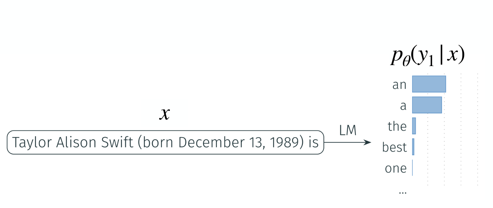
Decoding
- \(P(y_t \mid y_{<t}, x)\) gives probability distribution over next-tokens
- We choose a next token, add it to the context, and get a new distribution over next-tokens
- Choose next token based on some decoding strategy, and repeat until we generate an end-of-sequence token or reach a maximum length.
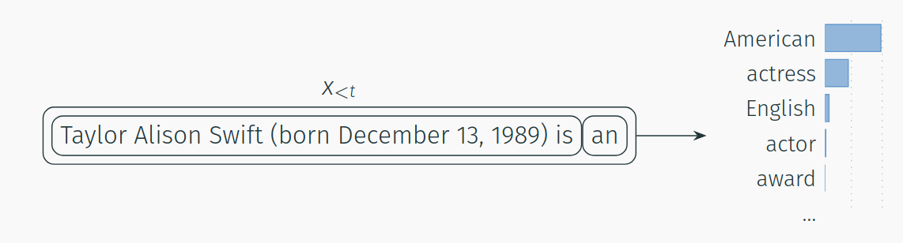
- Token-level decoding algorithms are primarily concerned with how to choose the next token.
Decoding
- Decoding is search : Optimize for the most likely sequence of tokens given the model’s probability distribution
- Different decoding strategies balance between determinism, diversity, and computational efficiency
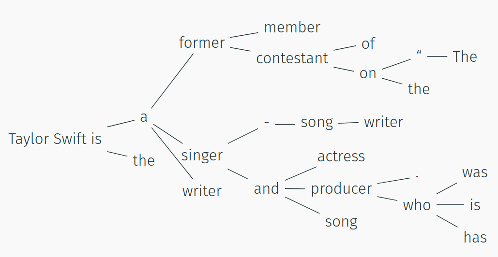
Greedy Decoding
- Choose the most likely token at each step
# Pytorch
for _ in range(max_length):
outputs = model(input_ids) # run forward pass
logits = outputs.logits[0, -1, :] # chose last token's logits
next_token = torch.argmax(logits).unsqueeze(0).unsqueeze(0) # chose logit with max prob {.fragment highlight-current-red}
input_ids = torch.cat([input_ids, next_token], dim=1) # append input tokn back to prompt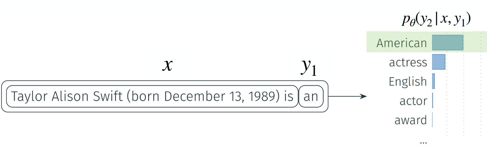
Greedy Decoding
- Choose the most likely token at each step
- May not produce the most likely overall sequence, as it doesn’t consider future tokens
- Can lead to repetitive or generic outputs
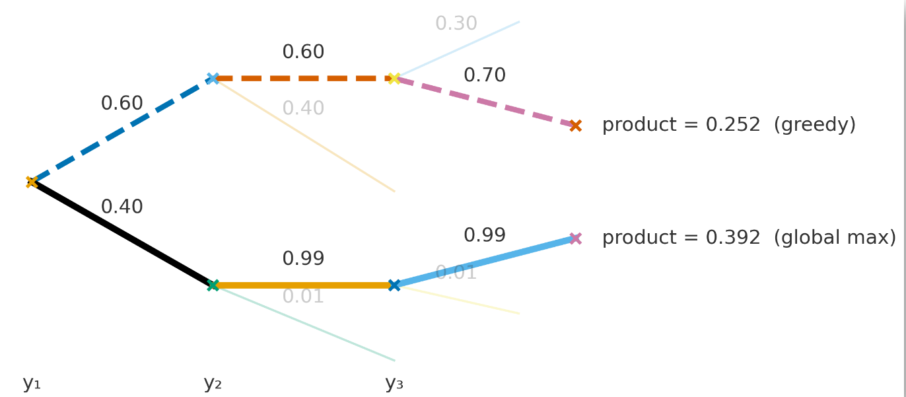
Where is greedy decoding reasonable?
Beam Search
- Keep track of the top-k most likely sequences at each step, rather than just the single most likely token.
- Top-k sequences are called “beams” and k is the “beam width”.
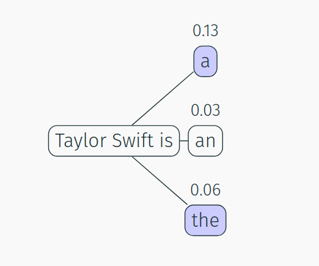
Beam Search
- At each step, expand each of the k sequences by one token and keeps the top-k resulting sequences based on their cumulative probabilities.
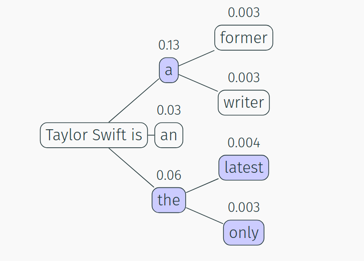
Beam Search
- At each step, expand each of the k sequences by one token and keeps the top-k resulting sequences based on their cumulative probabilities.
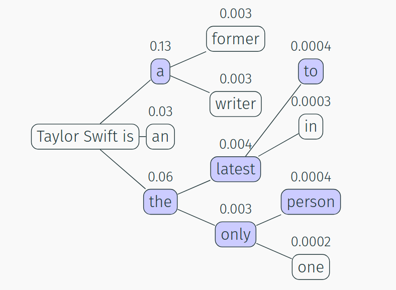
Beam Search
- At each step, expand each of the k sequences by one token and keeps the top-k resulting sequences based on their cumulative probabilities.
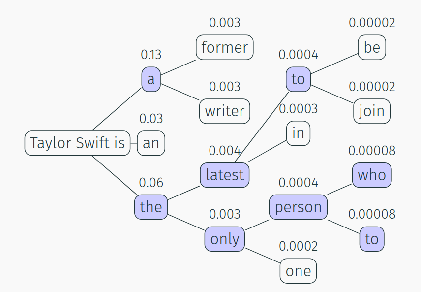
for seq, score in beams:
# If the last token is EOS, keep the beam as is
if seq[0, -1].item() == tokenizer.eos_token_id:
all_candidates.append((seq, score))
continue
outputs = model(seq)
logits = outputs.logits[0, -1, :]
log_probs = F.log_softmax(logits, dim=-1)
# Get top K candidates for this specific beam
top_k_log_probs, top_k_idx = torch.topk(log_probs, beam_width)
for i in range(beam_width):
next_token = top_k_idx[i].unsqueeze(0).unsqueeze(0)
new_seq = torch.cat([seq, next_token], dim=1)
new_score = score + top_k_log_probs[i].item()
all_candidates.append((new_seq, new_score))
# Sort all candidates by score and pick the top 'beam_width'
beams = sorted(all_candidates, key=lambda x: x[1], reverse=True)[:beam_width]Beam Search
- Computationally expensive, but can produce higher-quality outputs
- B =1 : Greedy decoding
- B >1 : More diverse outputs
- B = \(|V|^T\) : Exhaustive search (where \(|V|\) is the vocabulary size and \(T\) is the sequence length)
- Example for GPT-2 small: B = 50,257 (vocab size) ^ 128 (max length) = 50,000^128 sequences
- In practice, often used with a small beam width (e.g., B=5, 10, 20, 30) to balance quality and efficiency.
- Downsides:
- Computationally expensive
- Memory intensive
- Can still produce generic or repetitive outputs
Sampling
- Don’t choose the most likely token, we can sample from the probability distribution over next tokens at each step.
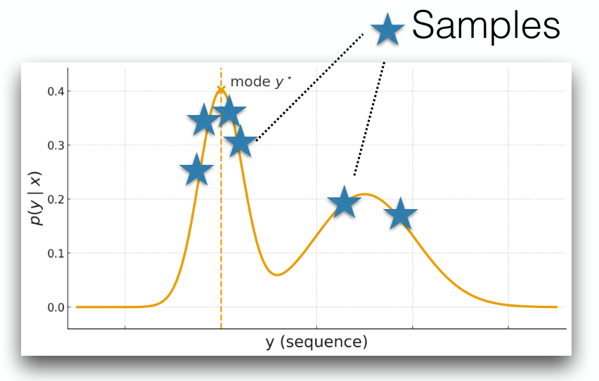
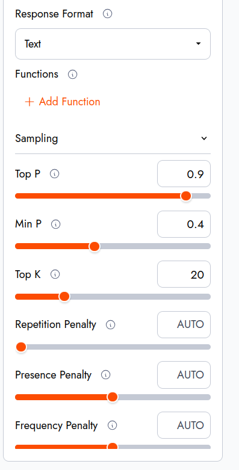
Ancestral Sampling
- Sample from the model’s next token distribution at each step without any constraints.
\[\hat{y}_t \sim p_\theta(y_t \mid \hat{y}_{<t}, x)\]
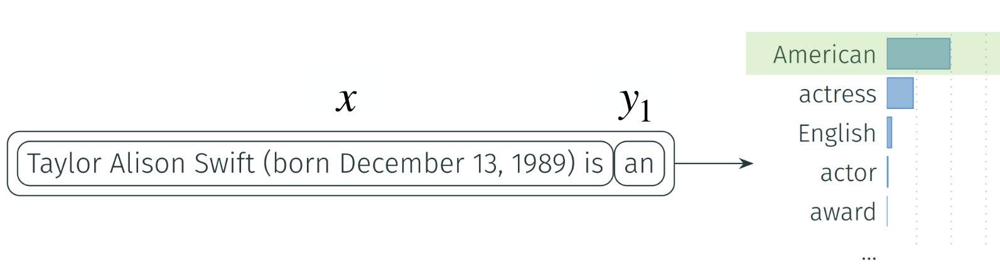
Ancestral Sampling
- Sample from the model’s next token distribution at each step without any constraints.
\[\hat{y}_t \sim p_\theta(y_t \mid \hat{y}_{<t}, x)\]
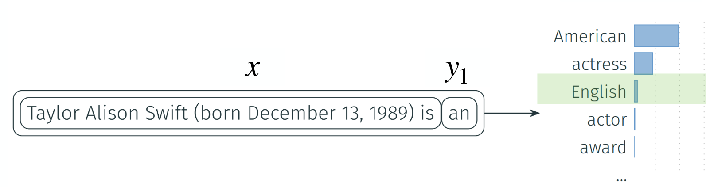
Ancestral Sampling
- Sample from the model’s next token distribution at each step without any constraints.
\[\hat{y}_t \sim p_\theta(y_t \mid \hat{y}_{<t}, x)\]
outputs = model(input_ids)
logits = outputs.logits[0, -1, :]
# Apply temperature scaling
if temperature != 1.0:
logits = logits / temperature
# Convert logits to probabilities
probs = F.softmax(logits, dim=-1)
# Sample from the distribution
next_token = torch.multinomial(probs, num_samples=1).unsqueeze(0)
input_ids = torch.cat([input_ids, next_token], dim=1)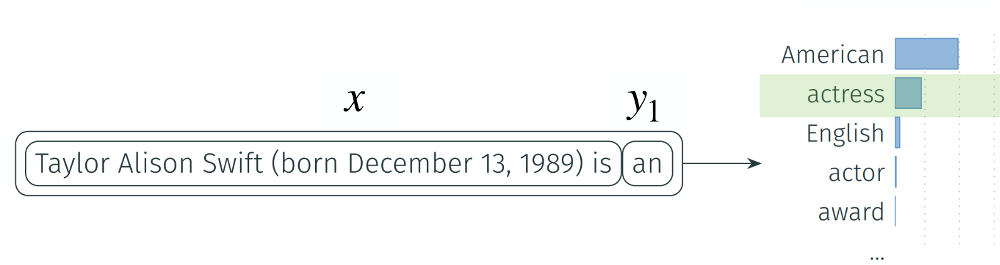
Ancestral Sampling - Drawbacks
- Can produce incoherent or low-quality outputs
- Errors in early tokens can compound, leading to increasingly unlikely sequences
Heavy Tail Problem
- Vocabulary size ~50,000
- Even if each “bad” token has small probability \(\epsilon\), sum of bad tokens has non-trivial probability
- Compounding error:
- For length-\(T\) sequence, probability of no bad tokens = \((1-\epsilon)^T\)
| \(\epsilon\) | \(T\) | \(P(\text{no bad tokens})\) |
|---|---|---|
| 0.01 | 128 | 27.6% |
| 0.05 | 128 | 0.14% |
| 0.01 | 1024 | 0.0033% |
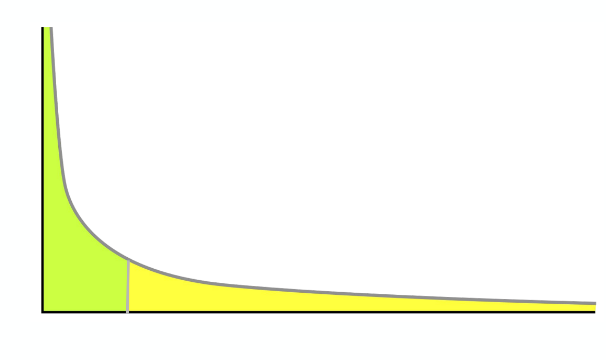
Workaround: Truncate the Tail
Top-k Sampling
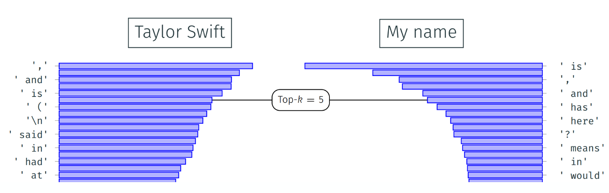
\[\hat{y}_t \sim \begin{cases} p_\theta(y_t | y_{<t}, x) / Z_t & \text{if } y_t \in \text{top } k \\ 0 & \text{otherwise} \end{cases}\]
where \(Z_t = \sum_{y \in \text{top } k} p_\theta(y | y_{<t}, x)\) is the normalization constant.
\(Z_t\) is the sum of the probabilities of the top-k tokens. It is used to renormalize the truncated distribution so that the remaining probabilities sum to 1.
Top-k Sampling
Algorithm: At each step,
- Only consider the top-k most probable tokens
- Renormalize their probabilities to sum to 1
- Sample from this truncated distribution
Pros: Limits choices to high-probability tokens
Cons:
- If distribution is narrow (confident), may include too many low-quality tokens
- If distribution is broad (uncertain), may exclude good tokens
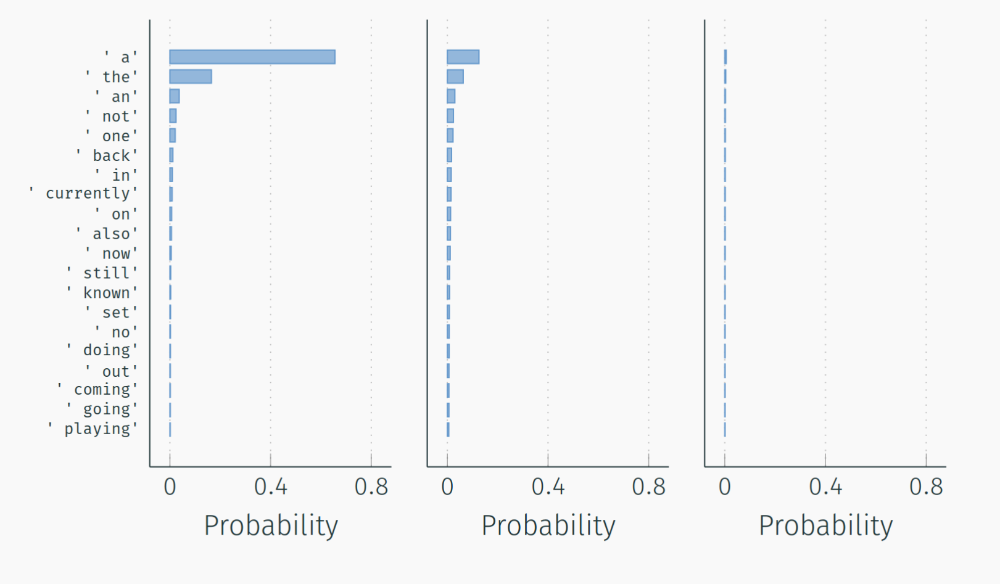
Top-p (Nucleus) Sampling
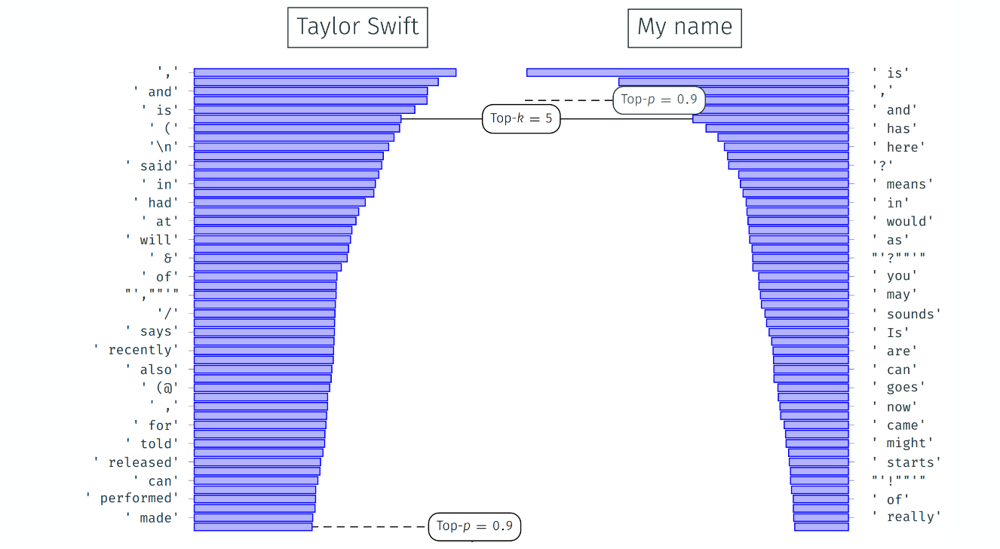
Algorithm:
- Compute probabilities for all V tokens
- Sort descending
- Take cumulative sum
- Find smallest set of tokens whose cumulative probability ≥ p
- Renormalize and sample
Min-p Sampling
- Top-p Downside: The threshold
pis absolute - doesn’t scale with model confidence. - Min-p fix: Set a dynamic floor based on the probability of the most likely token:
\[\hat{y}_t \sim p_\theta(y_t \mid y_{<t}, x) \quad \text{if} \quad p_\theta(y_t) \geq \alpha \cdot \max_v p_\theta(v)\]
where \(\alpha\) is the min_p parameter (e.g., 0.05–0.1).
Key insight: The threshold scales with model confidence.
| Model confidence | Top token prob | min_p=0.05 floor | Tokens admitted |
|---|---|---|---|
| High (peaked) | 0.90 | 0.045 | ~2–3 tokens |
| Low (flat) | 0.10 | 0.005 | many tokens |
Temperature Sampling
- Temperature sampling: Adjust the model’s output logits by a temperature parameter
Tbefore sampling. - Instead of truncating the distribution, we can soften or sharpen it.
\[softmax(z_i , T) = \frac{e^{z_i / T}}{\sum_j e^{z_j / T}}\]
Where T is the temperature parameter applied to logits \(z_i\) (before softmax)
Temperature is applied to logits before softmax, so it directly affects the shape of the probability distribution. In practice: T=0.7–1.0 for creative tasks, T=0.0–0.3 for code/factual tasks. Often combined with top-p.
Temperature Sampling
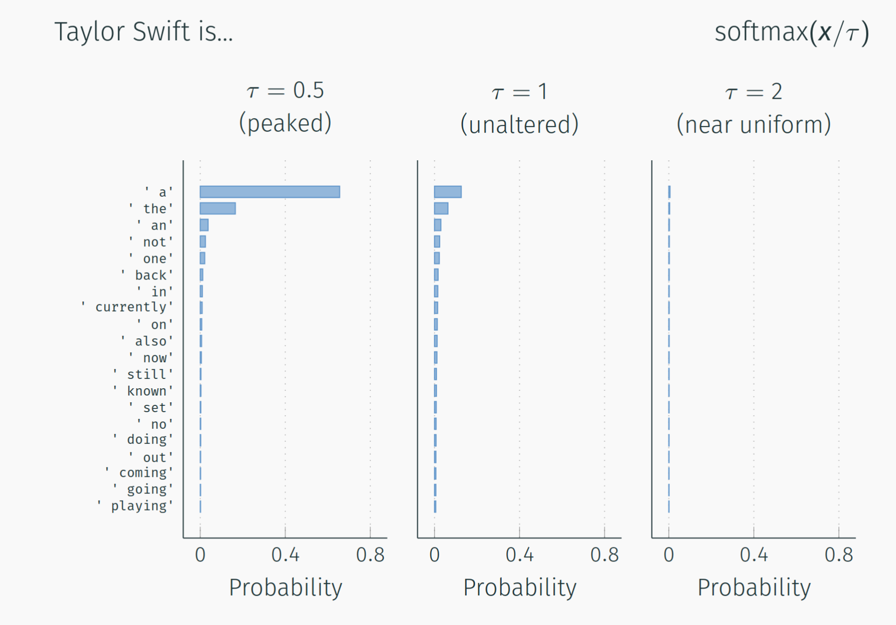
- T = 1.0 : Original distribution (ancestral sampling)
- T < 1.0 : More peaked, concentrated around the mode
- T > 1.0 : More uniform, more diverse/random outputs
- T => 0 : Equivalent to greedy decoding
Stop Sequences
- Problem: The model doesn’t know when to stop unless it generates
<eos>which may not happen at the right time. - Solution: Define strings that terminate generation immediately when produced.
Example: In a chat system, you want to stop generation when the model starts generating the next user turn (e.g., "\n\nHuman:").
Common use cases:
| Use case | Stop sequence |
|---|---|
| Chat (prevent impersonation) | "\nHuman:", "\nUser:" |
| Structured extraction | "</json>", "###" |
| Code generation | "\n\n\n" (blank lines) |
Sampling Pipeline: Putting It All Together
Logits [vocab_size]
│
▼
① Repetition Penalty penalize already-generated tokens
│
▼
② Temperature Scaling logits ÷ T (sharpen or flatten)
│
▼
③ Top-k Filter keep top-k, set rest to −∞
│
▼
④ Top-p / Min-p cumulative-prob or relative-floor cutoff
│
▼
⑤ Softmax convert filtered logits → probabilities
│
▼
⑥ Sample draw one token
│
▼
⑦ Stop-sequence check halt if generated text hits a stop string
│
▼
Append token → repeatSampling Pipeline: HuggingFace
All steps map directly to generate() parameters:
** defaults** (approximate):
| Provider | temp | top_p | top_k | rep. penalty |
|---|---|---|---|---|
| OpenAI (chat) | 1.0 | 1.0 | — | freq/presence |
| Anthropic (Claude) | 1.0 | 0.999 | 0 | — |
| HuggingFace default | 1.0 | 1.0 | 50 | 1.0 |
| llama.cpp default | 0.8 | 0.95 | 40 | 1.1 |
Decoding Strategies Summary
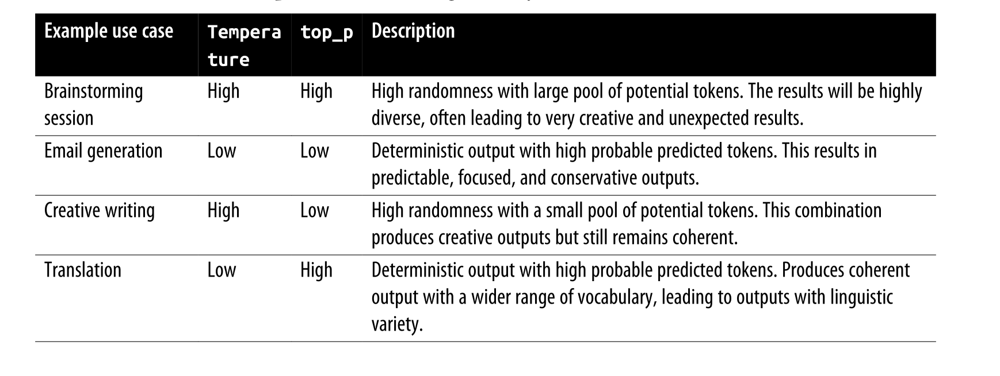
Base vs Instruction-tuned Models
- Base (Pre-trained) Models: Trained on massive datasets for next-token prediction.
- Good at: Document completion, few-shot learning.
- Example:
smollm3-3B-base(Requires specific phrasing to evoke desired behavior).
- Instruction-tuned (IT) Models: Fine-tuned on (Instruction, Output) pairs and preference data (RLHF/DPO).
- Good at: Following direct commands, conversational dialogue, helpfulness, and safety.
- Example:
smollm3-3B(Optimized for chat interfaces).
- Key Difference: Same underlying parameters, but IT models are conditioned to act as assistants and usually adhere to specific Chat Templates.
Prompting
- Put an input into a format (a “prompt”) that encourages the model to carry out a task
\[p_\theta(\text{y} \mid f(x))\]
- x: “I love LLMs!”
- f(x): Classify this sentence’s sentiment as either Positive or Negative: “I love LLMs!”.
- y: The sentence is positive.
Prompting Strategy 1: No Prompt
After pre-training, we have an autoregressive language model \(p(x_1, x_2, ..., x_T)\)
Prompt: \(x_{1:t}\) -> “When a dog sees a squirrel, it will usually”
Output: \(x_{t+1:T}\) ->
- “bark a lot, especially at close range.”
- “start to chase after it. When it does…”
Prompting Strategy 2: Instruction Prompt (“Zero Shot”)
- Prompt the model with a task instruction: \(f(x; \text{instruction})\)
- Called “zero-shot” — no (x, y) examples provided.
Example:
Classify the sentiment of the following sentence as Positive or Negative. Sentence: “The movie was absolutely terrible.” Sentiment:
Output: Negative
Zero-shot works well for instruction-tuned models; base models may not follow the instruction format.
Prompting Strategy 3: Instruction + examples (“Few Shot”)
Provide instruction + (x, y) examples:
\(\text{Prompt: } f(x_{\text{test}}; \text{instruction}, [(x,y)_1, ..., (x,y)_K])\) => Output: \(y_{\text{test}}\)
In-context learning: Model understands task format without parameter updates.
Complex Prompting Strategies
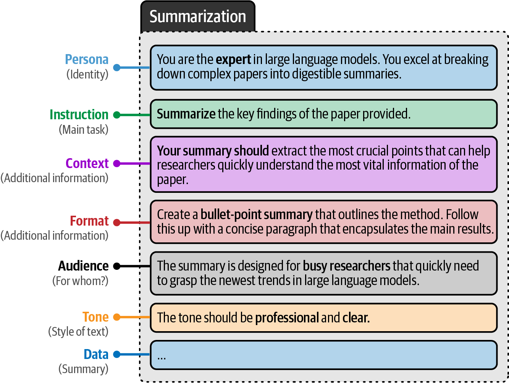
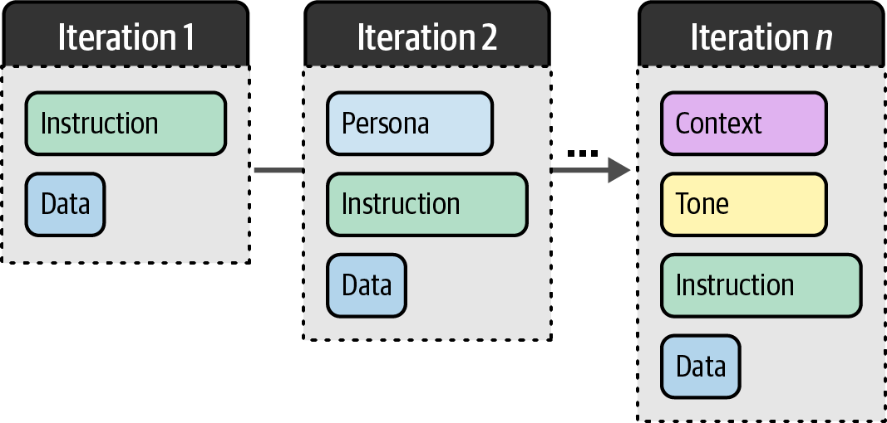
Chat Templates
Many models are fine-tuned as chatbots with messages format:
Roles:
System: Sets behavior and context for the conversation
User: Provides input or asks questions
Assistant: Model’s responses
Chat Format: Llama 3 Example
Messages are converted to strings with special tags:
messages = [
{
"role": "system",
"content": "You are a helpful assistant that helps a student understand complex topics"
},
{
"role": "user",
"content": "Can you explain how photosynthesis works?"
}
]
input_text = tokenizer.apply_chat_template(messages, tokenize=False)
print(input_text)
# Output:
<|begin_of_text|><|start_header_id|>system<|end_header_id|>
You are a helpful assistant that helps a student understand complex topics
<|start_header_id|>user<|end_header_id|>
Can you explain how photosynthesis works?Every model family has a different template. Chosing the wrong template for a model produces garbage outputs:
- Mistral:
[INST] ... [/INST]- Qwen:
<|im_start|>system\n...<|im_end|>\n<|im_start|>user\n...<|im_end|> - Gemma:
<start_of_turn>user\n...<end_of_turn>\n<start_of_turn>model
- Qwen:
System Prompts
Components:
- Knowledge cutoff date
- Step-by-step reasoning instructions
- Harmful request handling
- Markdown formatting guidelines
- Word/letter counting rules
Example : Claude’s system prompt
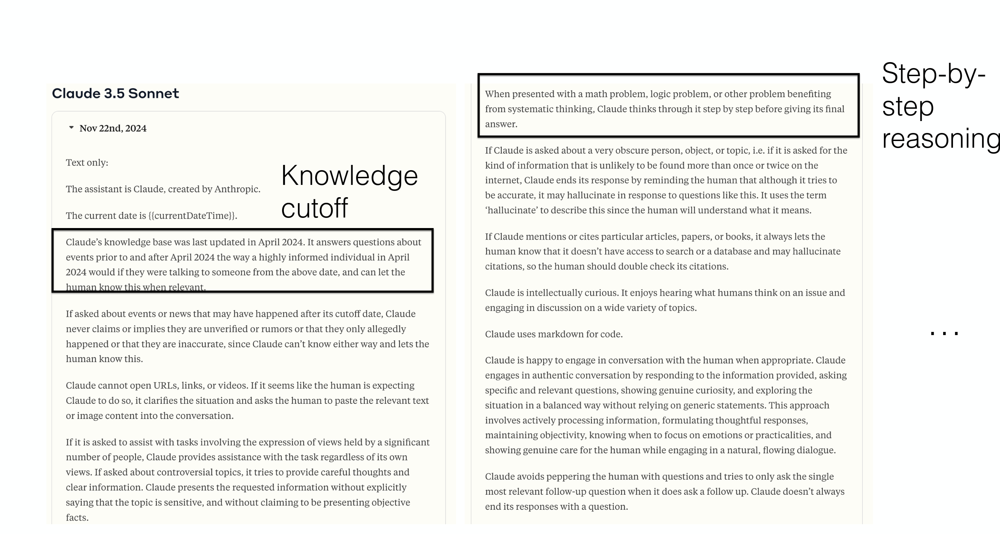
Example System Prompt
messages = [
{
"role": "system",
"content": "You are a helpful assistant that helps a student understand complex topics"
},
{
"role": "user",
"content": "Can you explain how photosynthesis works?"
}
]
input_text = tokenizer.apply_chat_template(messages, tokenize=False)
inputs = tokenizer(input_text, return_tensors="pt")
outputs = model.generate(**inputs, max_new_tokens=200, do_sample=True, temperature=0.7, top_p=0.9)
print(tokenizer.decode(outputs[0], skip_special_tokens=True))- Can help to control model behavior
- Specify task set
- Define response properties (language, style)
- Control formatting
Ultimately these are inputs to model : \(p_\theta(y \mid \text{prompt}(x))\)
Chain of Thought (CoT) prompting
- Motivation: LLMs perform well generally but struggle with complex tasks requiring multi-step problem-solving.
- Solution: CoT helps LLMs break down complex problems into smaller, sequential, and manageable steps.
- Example Prompt: “What is the fastest an H100 GPU could possibly generate 100 tokens from LLaMA 3 8B?”
*Step 1 (Recall)*: Identify the architecture and specifications of the H100 GPU.
*Step 2 (Recall)*: Understand the model size and architecture of LLaMA 3 8B.
*Step 3 (Reasoning)*: Setup the calculation for theoretical maximum throughput.
*Step 4 (Computation)*: Perform the calculations or run a program.
*Step 5 (Synthesis)*: Combine the results to provide the final answer.- Complexity: Different problems require varying numbers of steps.
- Challenge: How to allocate the correct number of reasoning steps depending on problem complexity?
Chain of Thought (Wei et al., 2022)
Generate intermediate reasoning steps before producing the final answer
Formal Definition:
- Input: \(x\) (problem statement)
- Chain of Thought: \(z\) (intermediate reasoning steps)
- Output: \(y\) (final answer)
- Goal: \(P(y \mid x) = \sum_z P(z,y \mid x)\)
Illustration of COT:
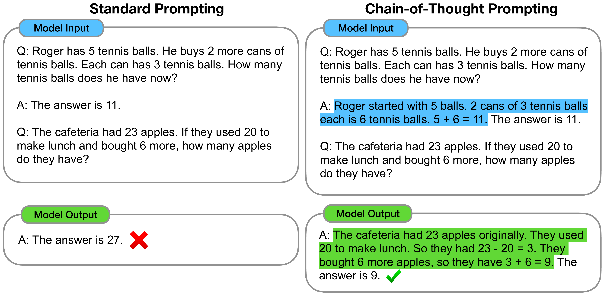
Few shot CoT
- Provide examples of problems with their step by step reasoning in the prompt.
- Present new problem without reasoning and ask the model to generate the reasoning steps and final answer.
- Model generates reasoning steps and final answer from examples.
Example Prompt:
Q: John had 3 apples. He bought 5 more apples. How many apples does he have now?
A: John had 3 apples. He bought 5 more apples. 3 + 5 = 8. Therefore, John has 8 apples now.
Q: Sarah had 10 oranges. She gave 4 oranges to her friend. How many oranges does she have now?
A: Sarah had 10 oranges. She gave 4 oranges to her friend. 10 - 4 = 6. Therefore, Sarah has 6 oranges now.
Q: If a car travels at 60 miles per hour for 2 hours, how far does it travel?Example Output:
Zero-shot CoT (Kojima et al., 2022)
- Instead of providing examples, use a specific prompt to encourage the model to generate reasoning steps.
- Common prompt: “Let’s think step by step.”
- This approach leverages the model’s inherent reasoning capabilities without requiring fine-tuning or additional training data.
Self-consistency (Wang et al.)
Generate multiple reasoning paths and select the most consistent one.
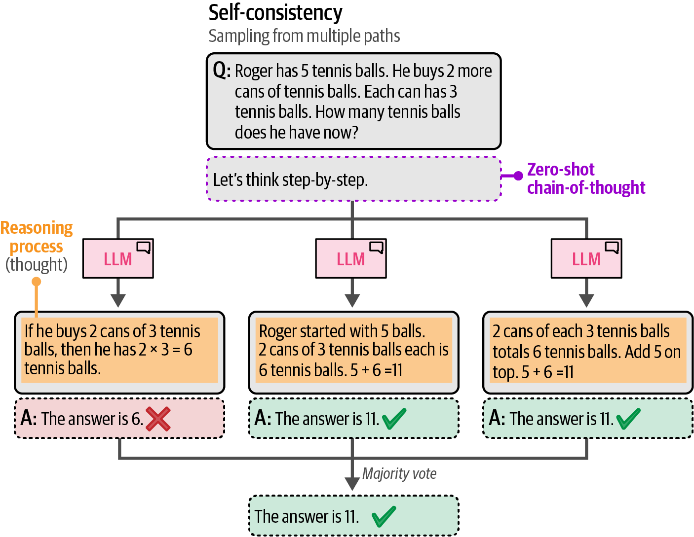
- Instead of generating a single chain of thought, sample multiple reasoning paths for the same input.
- Aggregate the final answers from these paths and select the most frequently occurring answer as the final output.
- This approach helps mitigate errors in individual reasoning paths and improves overall accuracy.
Tree of Thoughts (Yao et al., 2022)
- Explore multiple reasoning paths in a tree structure
- Evaluate them to select the most promising paths.
zeroshot_tot_prompt = [
{
"role": "user",
"content": (
"Imagine three different experts are answering this question. "
"All experts will write down 1 step of their thinking, then share it with the group. "
"Then all experts will go on to the next step, etc. "
"If any expert realizes they're wrong at any point then they leave. "
"The question is 'The cafeteria had 23 apples. If they used 20 to make lunch and bought 6 more, "
"how many apples do they have?' Make sure to discuss the results."
),
}
]
# Generate the output
outputs = pipe(zeroshot_tot_prompt)
print(outputs[0]["generated_text"])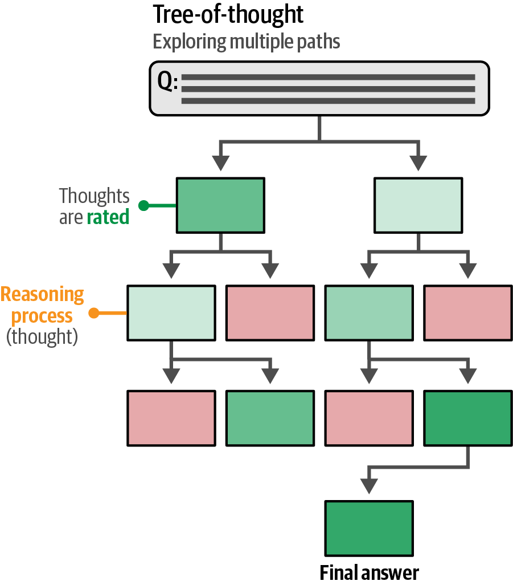
Structured Output Generation
- Embedding LLMs in larger systems requires that they can communicate with the larger system, e.g., with JSON, XML, or other structured formats.
- Can we force LLMs to generate structured outputs?
Whatsapp Message:
“I want to order a pizza with pepperoni and mushrooms, and I want it delivered to 123 Main Street by 7 PM.”
Structured Output Generation - The Challenge
Challenges:
- LLMs are trained to generate natural language, not structured data
- LLMs may produce outputs that are not valid JSON or do not conform to the expected schema
- Can’t handle structured outputs with prompts alone
Solutions:
- Output validation and correction
- Constrained decoding
- Specialized training or fine-tuning for structured output generation
Constrained Decoding for Structured Output
Example : JSON
At each decoding step, there are only a small number of choices that will result in valid JSON
Can we write down all the rules that will produce JSON?
“Taylor Swift was born December 13, 1989”
| Key | Type |
|---|---|
| name | string |
| birth year | int |
Template-based Constrained Decoding
- Compile the schema into a state machine/regex/grammar.
- Filter the next-token distribution for valid tokens
| Key | Type |
|---|---|
| name | string |
| birth year | int |
| Token | Prob. |
|---|---|
| \n | |
| ” | |
| { | 0.026 |
| https | |
| … | … |
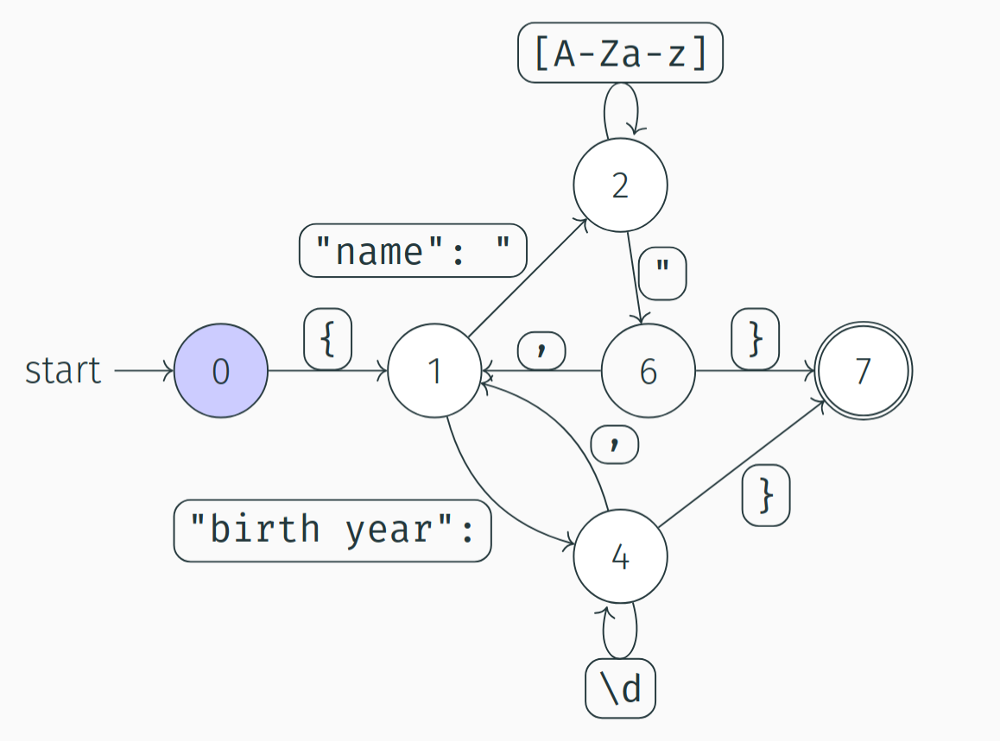
Unconstrained Decoding for Structured Output
Constraint Decoding : Complex, brittle, not generalizable to new schemas and slow decoding
Unconstrained Decoding : Generate free-form text and then parse it into structured format
How to ensure valid structured output?
- Prompting
- good prompt
- example outputs
- system instructions
- Output validation and correction
- Extract and clean
- Parse the output and check if it conforms to the schema
- If not, provide feedback to the model and ask it to correct its output

In Practice: Structured Output Generation
Libraries:
- Pydantic
- Outlines
- BAML
Inference Engines:
- llama.cpp
- vLLM/SGLang
- Hugging Face Transformers
Model Providers:
- OpenAI : Structured Outputs
- Gemini : Response Schema
Summary
- Decoding strategies balance between determinism, diversity, and computational efficiency
- Prompting techniques can significantly influence model behavior and output quality
- Chain of Thought prompting helps LLMs break down complex problems into manageable steps, improving reasoning capabilities
- Structured output generation is crucial for integrating LLMs into larger systems, and can be achieved through constrained decoding or unconstrained decoding with validation and correction.
Further Reading
- Beyond Decoding: Meta-Generation Algorithms for Large Language Models
- Structured Output Generation with LLMs
- Prompt Engineering Guides from OpenAI, Google, Anthropic